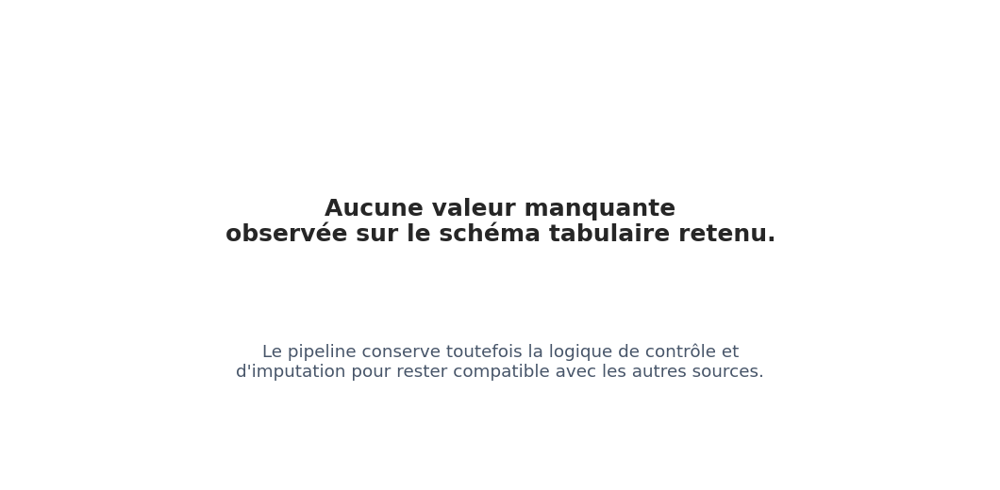
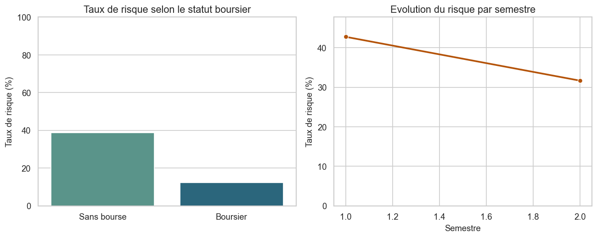
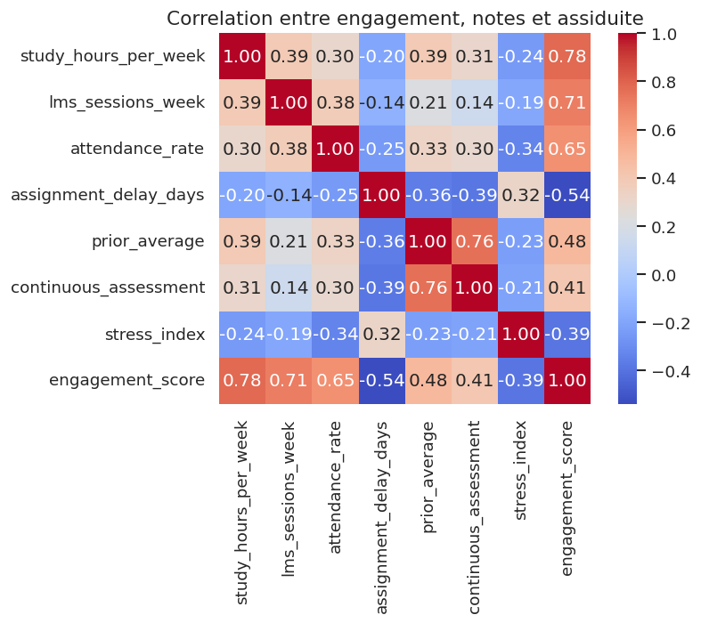
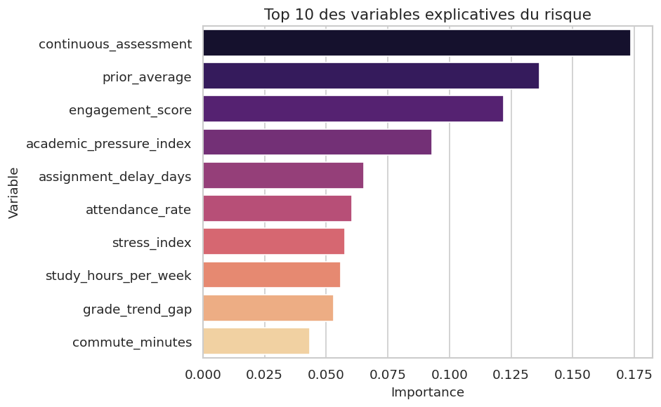
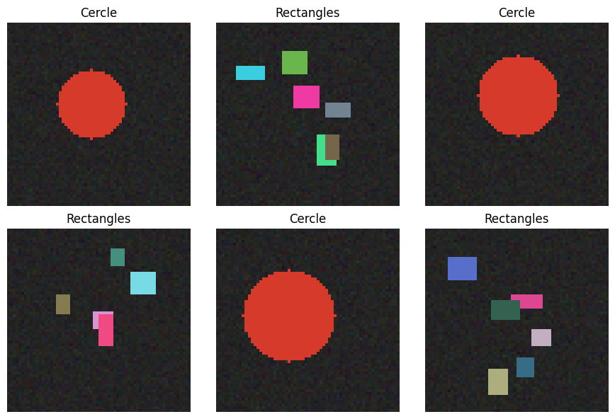
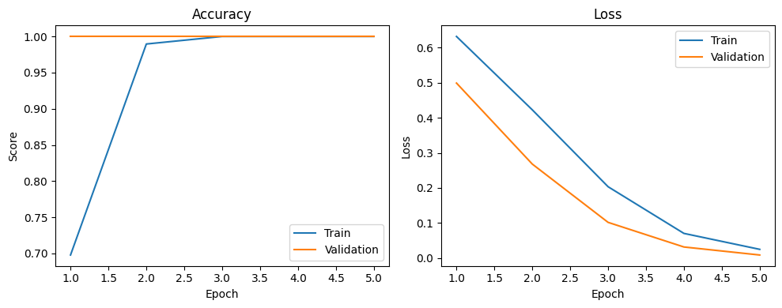

Mon Projet Data Science
Projet Fil Rouge Data Science - Sujet Libre
1 Introduction et Contexte Métier

Le sujet principal retenu pour ce projet est la prédiction du risque d’abandon scolaire ou d’échec académique. La problématique métier consiste à identifier le plus tôt possible les étudiants à risque afin de déclencher des actions ciblées: tutorat, suivi pédagogique, accompagnement social ou adaptation du rythme d’apprentissage.
L’enjeu n’est pas uniquement de prédire une cible binaire. Il s’agit aussi de construire une chaîne analytique défendable, lisible par une équipe pédagogique et exploitable pour l’aide à la décision. Le livrable final doit donc articuler nettoyage de données, exploration explicative, modélisation tabulaire et ouverture vers une brique vision liée à des copies scannées ou à de l’écriture manuscrite.
1.1 Contexte du Projet
Le domaine d’étude est celui de l’analytics éducatif. Un établissement d’enseignement ou un service de réussite étudiante dispose souvent de données fragmentées: notes continues, absences, retard dans les remises, temps de connexion à une plateforme pédagogique, participation en classe, statut boursier, parcours antérieur ou indicateurs socio-économiques. Isolément, ces variables sont peu actionnables; combinées, elles permettent de détecter des signaux faibles de décrochage.
Ce sujet est pertinent scientifiquement et stratégiquement. Il répond à un besoin réel de prévention, mobilise des variables tabulaires hétérogènes, soulève des questions de biais et d’équité, et se prête naturellement à une extension multimodale via l’analyse de copies numérisées, de formulaires pédagogiques ou d’écritures manuscrites.
1.2 Objectif Analytique
La cible principale sera une variable de type dropout_risk, failure_risk ou success_status, selon le jeu de données final retenu. Le problème est donc formulé comme une classification supervisée, éventuellement complétée par une analyse de probabilité de risque pour prioriser les interventions pédagogiques.
Les livrables analytiques sont les suivants:
- un jeu de données nettoyé et un jeu de données prêt pour la modélisation;
- des indicateurs descriptifs et des visualisations métier sur l’assiduité, les résultats académiques et l’engagement étudiant;
- un modèle de classification de référence comparé à une baseline naïve pour repérer les profils à risque;
- une brique CNN documentée, pensée pour être raccordée à des copies scannées, de l’écriture manuscrite ou des documents pédagogiques numérisés.
Note de cadrage: pour assurer la reproductibilité du projet, le dépôt s’appuie désormais sur un dataset étudiant synthétique réaliste généré automatiquement. Ce choix permet d’aligner le pipeline complet, les métriques et les visualisations sur le nouveau sujet métier, tout en gardant la possibilité de substituer plus tard un jeu de données réel anonymisé.
1.3 Synthèse
Le travail mené couvre les deux jalons du projet autour d’un même cas d’usage: la détection précoce du risque de décrochage étudiant. L’ensemble de la démarche articule préparation de données, analyse exploratoire, modélisation supervisée et ouverture vers une composante vision par ordinateur.
Les principaux résultats obtenus peuvent être résumés ainsi:
- le pipeline aboutit à une base étudiante cohérente, nettoyée et enrichie par des variables dérivées interprétables;
- l’analyse exploratoire met en évidence des contrastes nets selon les programmes, le statut boursier et la dynamique semestrielle;
- la régression logistique constitue le meilleur compromis pour une logique d’alerte précoce, avec un rappel de 0,741 et un ROC-AUC de 0,878;
- la branche CNN, encore démonstrative, confirme la faisabilité technique d’une extension future vers des documents pédagogiques numérisés.
1.4 Positionnement par Rapport au Cahier des Charges
| Dimension attendue | Traitement retenu dans ce rapport | Supports mobilisés |
|---|---|---|
| Préparation des données | Audit des manques, imputation, création de variables dérivées et encodage pour la modélisation | src/student_risk_dataset.py, src/tp1_student_wrangling.py |
| Analyse exploratoire | Statistiques descriptives, profils par programme, distributions et corrélations | src/tp2_student_eda.py, tableaux de data/processed |
| Visualisation | Figures synthétiques centrées sur les signaux pédagogiques majeurs | src/generate_report_figures.py, figures du dossier report/assets |
| Modélisation | Comparaison entre baseline, régression logistique et Random Forest | src/tp3_student_modelisation.py |
| Évaluation | Lecture conjointe de l’accuracy, du rappel, du F1-score et du ROC-AUC | data/processed/tp3_model_metrics.csv |
| Restitution | Interprétation métier, matrice d’action pédagogique et discussion des limites | sections d’analyse et de storytelling du présent rapport |
Cette structuration permet de maintenir une continuité entre les attendus pédagogiques du cours et la progression réelle de l’étude, sans dissocier artificiellement les phases exploratoires, prédictives et de communication.
2 Acquisition et Préparation des Données (Data Wrangling)
Le succès de tout projet de Data Science repose sur la qualité de la préparation des données (McKinney 2020). Cette section documente l’audit de qualité et les étapes de nettoyage appliquées à vos jeux de données bruts.
2.1 Audit de Qualité
Le jeu brut généré pour ce projet contient 1 600 étudiants et 16 variables, avec une cible dropout_risk égale à 8,5 % de la population (136 étudiants à risque sur 1 600). Les identifiants étudiants sont uniques par construction, ce qui élimine ici le risque de doublons d’inscription.
Les valeurs manquantes restent limitées mais non négligeables, ce qui justifie une vraie étape de wrangling. Les variables les plus touchées sont attendance_rate (71 valeurs manquantes, soit 4,44 %), assignment_delay_days (56, soit 3,50 %), prior_average, study_hours_per_week et continuous_assessment (52 chacune, soit 3,25 %), ainsi que parental_education, lms_sessions_week et stress_index (49 chacune, soit 3,06 %).
Ces manques sont réalistes dans un contexte éducatif: données de présence incomplètes, traces LMS irrégulières, notes pas encore publiées ou informations administratives partielles.

2.2 Algorithme de Nettoyage
Le pipeline de nettoyage est implémenté dans src/student_risk_dataset.py et src/tp1_student_wrangling.py. La logique retenue est la suivante:
- génération d’un dataset brut réaliste et reproductible par graine aléatoire;
- normalisation des booléens et conversion robuste des colonnes numériques;
- création de drapeaux de non-réponse pour
attendance_rate,prior_averageetcontinuous_assessment; - imputation médiane sur les variables quantitatives,
Falsesur les booléens etUnknownsur les catégories; - création de variables dérivées interprétables:
engagement_score,grade_trend_gapetacademic_pressure_index; - encodage one-hot des variables catégorielles pour obtenir une table directement exploitable par Scikit-Learn.
Le pipeline ne supprime aucune ligne: la cohorte complète de 1 600 étudiants est conservée. La sortie wranglée contient 22 colonnes et la table model_ready 25 colonnes.
2.3 Travaux Pratiques de Wrangling
Le script de wrangling génère deux sorties versionnées:
data/processed/tp1_student_risk_wrangled.csvpour l’analyse métier;data/processed/tp1_student_risk_model_ready.csvpour la modélisation supervisée.
Cette séparation est particulièrement importante dans un contexte éducatif, car les enseignants et responsables de formation doivent pouvoir relire les données et comprendre les transformations appliquées.
3 Analyse Exploratoire des Données (EDA)
Dans cette section, nous analysons les relations statistiques fondamentales qui régissent votre domaine d’étude au sein du jeu de données.
3.1 Statistiques Descriptives
Le profil moyen observé est celui d’un étudiant de 21,79 ans, travaillant 14,23 heures par semaine, se connectant 11,7 fois par semaine au LMS, avec un taux d’assiduité moyen de 89,95 % et un délai moyen de remise de 1,26 jour. La note antérieure moyenne est de 17,29/20 et l’évaluation continue moyenne de 17,98/20.
| Programme | Assiduité moyenne | Note antérieure moyenne | Taux de risque |
|---|---|---|---|
| Data Science | 91.02 % | 17.96 | 4.4 % |
| Business Analytics | 89.70 % | 17.35 | 8.6 % |
| Cybersecurity | 89.80 % | 16.95 | 9.9 % |
| Digital Design | 88.89 % | 16.64 | 12.6 % |
Le signal métier est déjà lisible: les étudiants de Digital Design cumulent l’assiduité la plus faible, les notes les plus basses et le taux de risque le plus élevé, alors que Data Science présente le profil le plus favorable.
3.2 Ingénierie de Variables (Feature Engineering)
L’ingénierie de variables transforme ici les traces brutes en signaux pédagogiques exploitables. Trois variables ont été construites explicitement:
engagement_score, qui combine assiduité, temps de travail, activité LMS et retards de remise;grade_trend_gap, qui mesure l’écart entre l’évaluation continue et la moyenne antérieure;academic_pressure_index, qui agrège stress, retards et dégradation d’assiduité.
Ces variables dérivées ont deux avantages. Elles améliorent la capacité prédictive du modèle, mais surtout elles restent compréhensibles par les équipes éducatives. Une alerte fondée sur la baisse des notes, la chute d’engagement et la hausse de pression académique est plus défendable qu’un score opaque.
3.3 Travaux Pratiques d’Exploration Visuelle (EDA)
L’exploration visuelle est calculée dans src/tp2_student_eda.py et mise en forme dans src/generate_report_figures.py. Les visuels générés dans report/assets sont désormais alignés sur le sujet étudiant du projet.
4 Visualisation Multidimensionnelle (Insights)
Nous présentons ici les visualisations cibles du projet et la manière dont elles doivent être interprétées pour une cellule de réussite étudiante.
L’EDA montre que le risque académique n’est pas aléatoire. Il se concentre sur quelques dimensions stables: performance récente, assiduité, engagement numérique et contexte socio-éducatif.
4.1 Profils et Distributions Caractéristiques

Trois insights ressortent immédiatement:
- le statut boursier joue un rôle protecteur dans ce dataset: 10,82 % des non-boursiers sont classés à risque contre 4,92 % des boursiers;
- le risque n’est pas homogène selon les programmes:
Digital Designatteint 12,6 % contre 4,4 % pourData Science; - certains semestres concentrent davantage de fragilité, avec des pics de risque autour de 10,9 % en semestre 2 et 11,5 % en semestre 6.
Ces contrastes justifient le recours à un score de risque multicritère, plutôt qu’à une lecture limitée à la moyenne générale.
4.2 Corrélations Globales

La matrice de corrélation met en évidence plusieurs relations structurantes. La plus forte corrélation observée est celle entre prior_average et continuous_assessment (0,756), ce qui est cohérent avec la continuité du niveau académique. À l’inverse, assignment_delay_days est négativement corrélé à continuous_assessment (-0,386) et à prior_average (-0,360), ce qui renforce l’idée que les retards de remise sont un bon proxy de fragilité.
L’objectif n’est donc pas seulement descriptif. Cette lecture permet aussi d’identifier les variables redondantes, les dépendances fortes et les agrégations utiles pour la modélisation.
5 Modélisation et Apprentissage
5.1 Schéma Global du Pipeline de Données
Le pipeline complet intègre à la fois la branche analytique tabulaire (Machine Learning) et la branche d’analyse visuelle ou de signaux complexes (Deep Learning CNN) :
graph TD
A[Notes absences LMS contexte social] -->|Jointure et anonymisation| B[Table etudiante brute]
B -->|Nettoyage et harmonisation| C[Table nettoyee]
C -->|Feature engineering pedagogique| D[Table model-ready]
D -->|Split temporel ou stratifie| E[Modele tabulaire]
E -->|Score de risque + importances| F[Tableau de bord pedagogique]
G[Copies scannees / ecriture manuscrite] -->|CNN TensorFlow| H[Variables visuelles complementaires]
H --> F
F --> I[Rapport Quarto et restitution]
style C fill:#e0f2fe,stroke:#0284c7,stroke-width:2px
style I fill:#f0fdf4,stroke:#16a34a,stroke-width:2px
style E fill:#fef3c7,stroke:#d97706,stroke-width:2px
style H fill:#fef3c7,stroke:#d97706,stroke-width:2px5.2 Modélisation Tabulaire (Machine Learning)
La branche tabulaire est implémentée dans src/tp3_student_modelisation.py. Trois modèles sont comparés:
- une baseline majoritaire, pour mesurer le niveau minimal de référence;
- une régression logistique, plus adaptée à une lecture opérationnelle centrée sur le rappel;
- une forêt aléatoire, utilisée ici pour sa robustesse et pour le classement des variables explicatives.
Le protocole retenu combine désormais deux niveaux d’évaluation complémentaires. Un split stratifié en 80/20 est conservé pour estimer la performance finale sur un jeu de test indépendant. En parallèle, une validation croisée stratifiée à 5 plis est réalisée sur l’échantillon d’entraînement afin de comparer les modèles sur plusieurs sous-échantillons et de réduire la dépendance à un découpage unique. Sur un dataset réel multi-semestres, ce protocole devrait ensuite évoluer vers un découpage chronologique ou par cohorte.

Les variables les plus influentes dans la forêt aléatoire sont continuous_assessment (0,174), prior_average (0,137), engagement_score (0,122), academic_pressure_index (0,093) et assignment_delay_days (0,065). Le modèle capture donc un mélange cohérent de performance académique, engagement et pression organisationnelle.
5.2.1 Travaux Pratiques de Modélisation Tabulaire
La modélisation produit trois sorties clés dans data/processed:
tp3_model_metrics.csvpour les scores comparatifs;tp3_cross_validation_metrics.csvpour la synthèse de validation croisée stratifiée;tp3_feature_importance.csvpour le classement des variables;tp3_predictions_sample.csvpour un échantillon de prédictions individuelles.
5.3 Modélisation Vision / Deep Learning (Analyse d’Images ou Signaux)
La branche Deep Learning est implémentée dans src/tp4_synthetic_cnn.py. À ce stade, elle sert de preuve de faisabilité technique pour l’intégration d’une chaîne vision dans le même environnement reproductible que la branche tabulaire.
Le script génère aujourd’hui 120 images RGB synthétiques de taille \(64 \times 64\) réparties en deux classes simples. Cette approche n’est pas la finalité métier du projet; elle prépare plutôt l’étape suivante, dans laquelle le CNN pourra être appliqué à des copies scannées, à de l’écriture manuscrite, à des formulaires pédagogiques ou à des traces visuelles issues d’un environnement d’apprentissage.
L’architecture CNN reste volontairement compacte:
- bloc
Conv2D(16)+MaxPooling2D; - bloc
Conv2D(32)+MaxPooling2D; Flatten,Dense(32),Dropout(0.2), puis sortie sigmoïde.


Le modèle est entraîné sur 96 images et validé sur 24 images. Il atteint une accuracy de validation de 1,00 et une validation_loss finale très faible lors des exécutions Docker du projet. Ce score est cohérent avec la simplicité du problème visuel utilisé comme démonstrateur. Il valide la chaîne TensorFlow, mais ne constitue pas encore un résultat métier sur des documents éducatifs réels.
5.3.1 Travaux Pratiques de Vision par Ordinateur (CNN)
Les sorties de cette branche sont exportées dans data/processed/tp4_cnn_history.csv, data/processed/tp4_cnn_metrics.csv et data/processed/tp4_cnn_predictions.csv, ainsi que dans deux figures du dossier report/assets.
6 Évaluation Métrique et Validation
6.1 Stratégie de Validation
La validation de la branche tabulaire repose ici sur un protocole en deux temps. D’abord, les modèles sont comparés par validation croisée stratifiée à 5 plis sur l’échantillon d’entraînement, ce qui permet d’observer la stabilité des métriques sur plusieurs découpages. Ensuite, le modèle retenu est réévalué sur un jeu de test hold-out stratifié 80/20, conservé à l’écart de la phase de sélection.
Ce choix est cohérent avec la structure du dataset synthétique actuel, qui ne contient pas d’historique longitudinal détaillé par étudiant. Dans un cadre réel, il faudrait néanmoins renforcer encore le protocole en privilégiant un découpage chronologique, par cohorte ou par groupe pédagogique afin d’éviter toute fuite d’information entre périodes d’observation.
Pour la branche CNN, le démonstrateur actuel repose sur un hold-out 80/20. Dans un contexte éducatif réel, cette brique devra être évaluée soit par validation croisée, soit sur un jeu de documents réellement séparé par session, matière ou promotion.
6.2 Validation Croisée Stratifiée
| Modèle | Accuracy CV | Recall CV | F1 CV | ROC-AUC CV |
|---|---|---|---|---|
| Baseline majoritaire | 0.915 | 0.000 | 0.000 | 0.500 |
| Régression logistique | 0.845 | 0.835 | 0.480 | 0.902 |
| Random Forest | 0.920 | 0.212 | 0.307 | 0.903 |
La validation croisée confirme le diagnostic posé sur le jeu de test: la régression logistique reste le modèle le plus adapté à une logique d’alerte précoce, car elle maintient un rappel moyen de 0,835 tout en conservant un ROC-AUC de 0,902. La forêt aléatoire présente une accuracy moyenne plus élevée, mais son rappel moyen demeure trop faible pour un usage de prévention. Le protocole plus robuste ne modifie donc pas la recommandation métier; il la renforce.
6.3 Résultats et Interprétation
Les métriques prioritaires sont la précision, le rappel, le F1-score et le ROC-AUC, car le coût d’une erreur n’est pas symétrique. Un faux négatif signifie qu’un étudiant à risque n’est pas détecté; un faux positif signifie qu’un étudiant reçoit un suivi inutile.
| Modèle | Accuracy | Rappel | F1-score | ROC-AUC |
|---|---|---|---|---|
| Baseline majoritaire | 0.916 | 0.000 | 0.000 | N/A |
| Régression logistique | 0.831 | 0.741 | 0.426 | 0.878 |
| Random Forest | 0.934 | 0.296 | 0.432 | 0.835 |
Le résultat clé est que la régression logistique est le meilleur choix opérationnel pour un système d’alerte précoce. Elle offre le meilleur rappel (0,741) et le meilleur ROC-AUC (0,878), ce qui signifie qu’elle détecte davantage d’étudiants à risque, au prix d’une précision plus faible. La forêt aléatoire est plus précise (0,800), mais son rappel (0,296) est trop faible pour un usage de prévention.
Ce compromis est cohérent avec le métier: un système d’alerte précoce supporte souvent un rappel élevé, quitte à assumer davantage de faux positifs, parce que le coût d’une intervention pédagogique légère reste inférieur au coût d’un abandon non détecté.
7 Data Storytelling et Communication
7.1 Tableau de Bord Interactif
Pour compléter les figures statiques du rapport, un tableau de bord interactif autonome a été ajouté au projet. Il rassemble dans une même interface les métriques du jeu de test, les résultats de validation croisée, les variables explicatives dominantes, les profils de risque par programme et une liste prioritaire d’étudiants à suivre.
7.2 Matrice d’Action Pédagogique
| Niveau de risque | Signaux dominants | Action recommandée | Indicateur de suivi |
|---|---|---|---|
| Élevé | Assiduité en baisse, retard de remise, chute du contrôle continu | Entretien sous 7 jours, tutorat ciblé, revue du plan de charge | Retour d’assiduité, remise des travaux, évolution du contrôle continu |
| Modéré | Engagement LMS irrégulier, stress élevé, notes encore récupérables | Coaching méthodologique, point hebdomadaire, soutien organisationnel | Reprise des connexions, stabilisation des retards |
| Faible | Bon engagement et résultats stables | Suivi léger et prévention standard | Maintien de la dynamique académique |
7.3 Recommandations Stratégiques / Métier
Les résultats suggèrent plusieurs pistes opérationnelles:
- construire un score d’alerte précoce fondé sur les absences, les notes récentes, la participation et les retards de remise;
- segmenter les actions de prévention par profil étudiant afin de distinguer les difficultés académiques, sociales et organisationnelles;
- privilégier des modèles explicables et des tableaux de bord simples, pour que les équipes pédagogiques puissent justifier les interventions;
- relier l’analyse prédictive à des actions concrètes: tutorat, rendez-vous de suivi, aide méthodologique, soutien social ou adaptation de charge.
7.4 Limites et Perspectives
Le projet conserve plusieurs limites explicites:
- le dataset utilisé est synthétique et non issu d’une base étudiante réelle anonymisée;
- les questions d’équité, de confidentialité et de biais socio-économiques devront être traitées explicitement avant tout usage réel;
- le modèle tabulaire n’a pas encore bénéficié d’une recherche systématique d’hyperparamètres ni d’une comparaison avec des modèles de boosting;
- la branche CNN repose pour l’instant sur un jeu d’images synthétiques simple, avant intégration de documents pédagogiques réels.
Les prolongements naturels sont donc l’intégration d’un dataset réel anonymisé, la création de variables dynamiques par semestre ou par période d’évaluation, la comparaison entre régression logistique, Random Forest et gradient boosting, la mise en place d’une validation croisée robuste et l’ajout d’une source visuelle réelle pour remplacer la démonstration synthétique.
7.5 Supports de Restitution
La restitution finale s’appuie sur plusieurs supports complémentaires. Le rapport Quarto constitue le document central de synthèse et d’interprétation. Il est complété par un schéma Mermaid du pipeline de données, par des jeux intermédiaires et finaux exportés dans data/processed, par un ensemble de figures produites dans report/assets, ainsi que par un tableau de bord interactif HTML dédié à l’exploration métier. Cet agencement vise à assurer à la fois la lisibilité du raisonnement, la traçabilité des transformations et la cohérence entre les résultats chiffrés et leur interprétation métier.
Ce document dynamique a été compilé en Quarto (Team 2024).